필요한 건 모두 화면 위에
지금 쓰는 앱의 메뉴, 소리·밝기, 달력, 알림, 검색이 화면 위 한 줄에서 시작돼요. 눌러도 쓰던 앱의 입력을 빼앗지 않아서 한/영 전환도 그대로예요.
상단바
지금 쓰는 앱의 메뉴가 위에
메뉴가 있는 앱은 그 메뉴를 그대로, 브라우저·탐색기·노션처럼 메뉴가 없는 앱은 자주 쓰는 단축키를 메뉴로 보여 줘요. 누르면 그 단축키가 앱에 들어가서, 원격 접속처럼 단축키가 잘 안 넘어갈 때도 클릭으로 돼요.
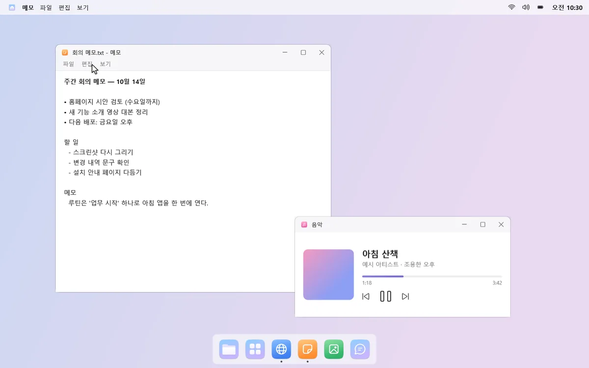
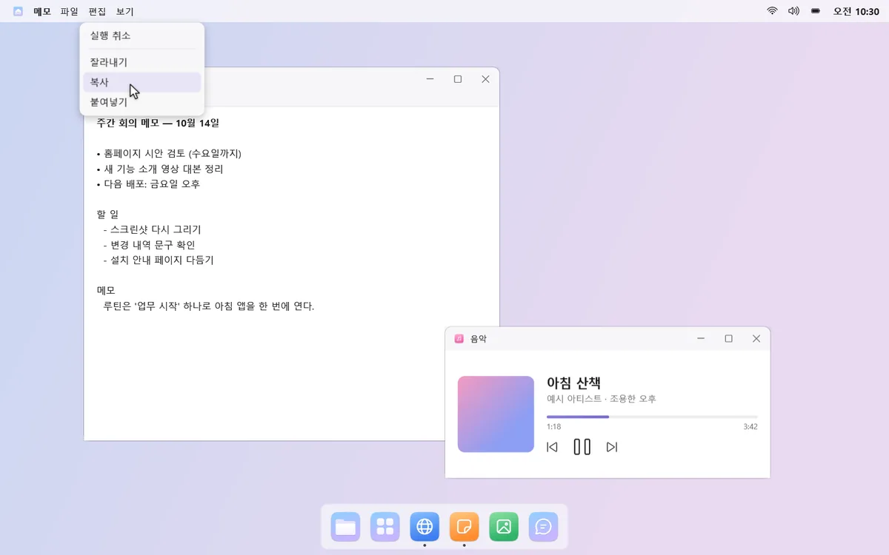
소리·밝기는 클릭 한 번
제어 센터에서 화면 밝기, 야간 모드, 전원 모드를 바로 바꿔요. 소리 메뉴에서는 출력·입력 장치와 음량을, 블루투스 메뉴에서는 이어폰 연결을 눌러서 해요.
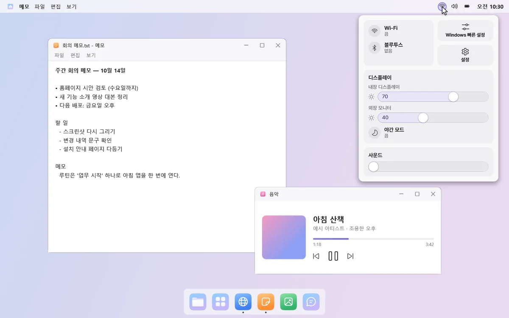
시계를 누르면 달력
달력에 한국 공휴일·대체공휴일·음력이 보여요. 구글·Outlook.com 캘린더 주소를 붙여 넣으면 일정도 함께 보여요.
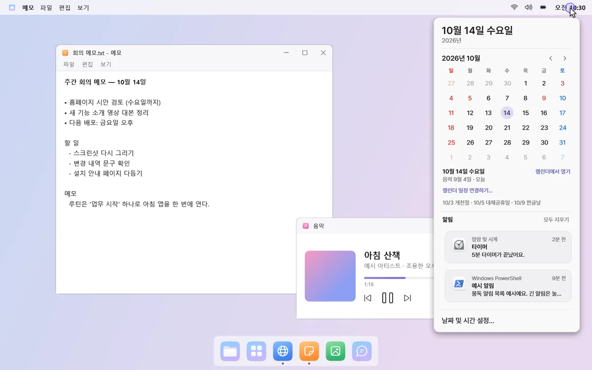
알림
오른쪽 위 배너로 조용히
윈도우 알림을 화면 오른쪽 위 배너로 보여 주고, 긴 알림은 눌러서 펼쳐 봐요. 놓친 알림은 시계를 누르면 앱별로 묶여 보여요.
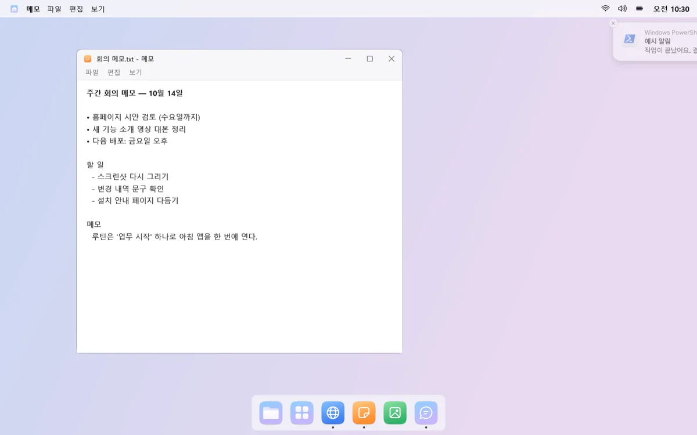
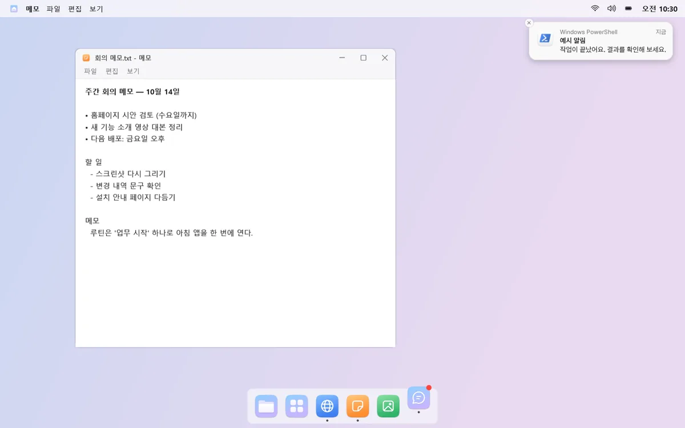
독 아이콘이 두 번 튀고 점으로
알림이 오면 그 앱의 독 아이콘이 두 번 튀고 빨간 점이 남아요. 계속 튀지 않고, 앱마다 켜고 끌 수 있어요.
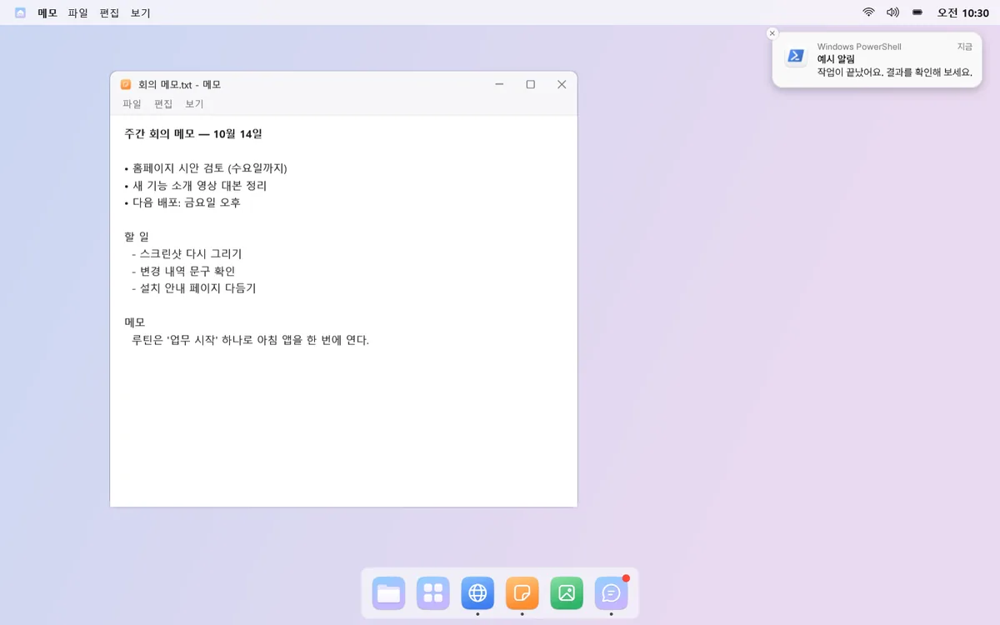
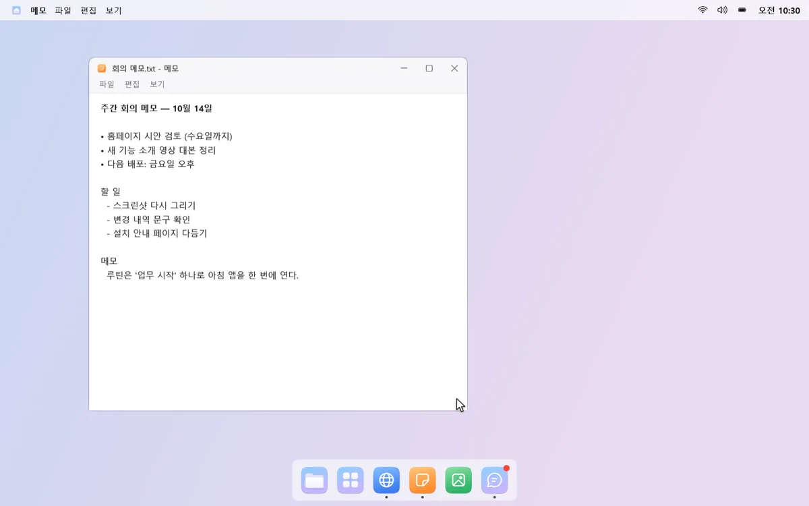
몽독 검색
초성만 쳐도 찾아요
단축키를 누르면 화면 가운데에 검색창이 떠요. 앱, 윈도우 설정, 파일·폴더를 찾고, 한글 초성(ㄱㅅㄱ → 계산기)으로도 찾아요.
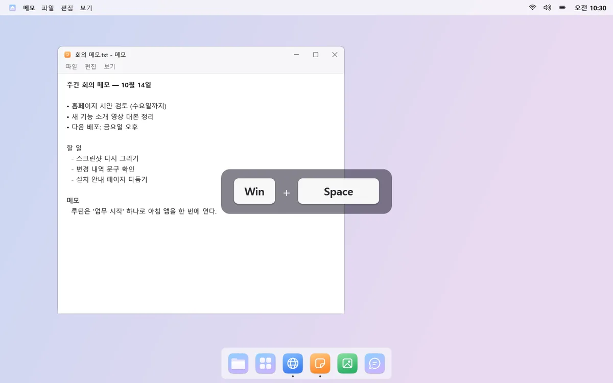
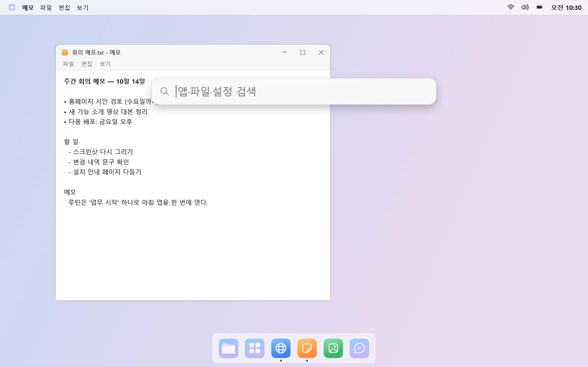
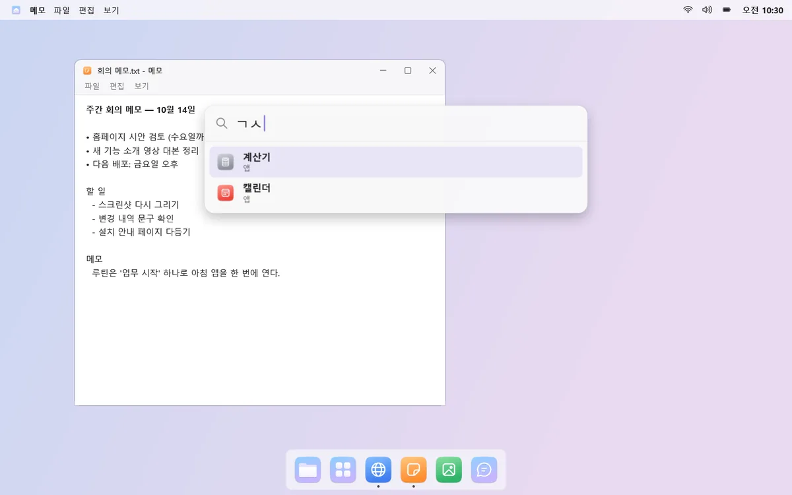
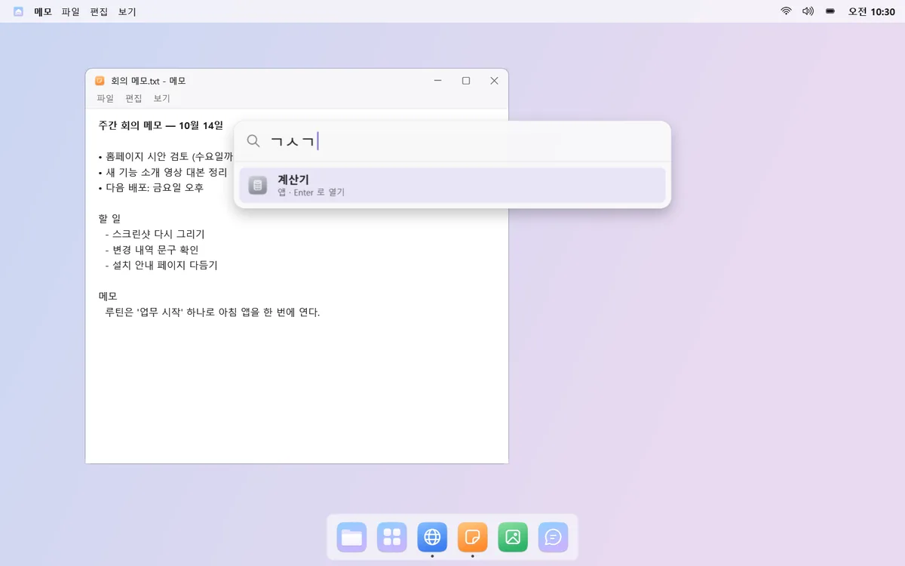
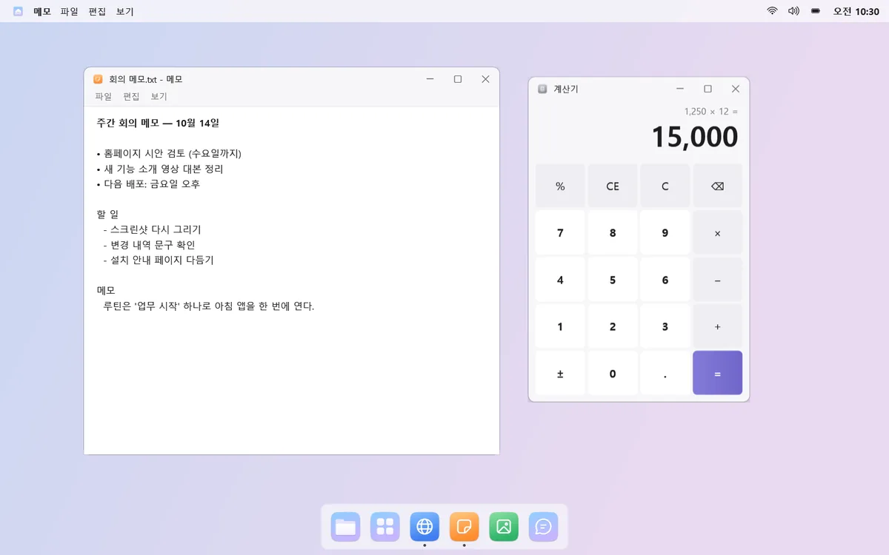
계산도, 웹 검색도
“200*15%”처럼 입력하면 맨 위에 답이 나오고, Enter로 복사돼요. 찾는 게 없으면 같은 검색어를 윈도우 검색이나 웹 검색(Google·네이버·Bing)으로 넘겨요.

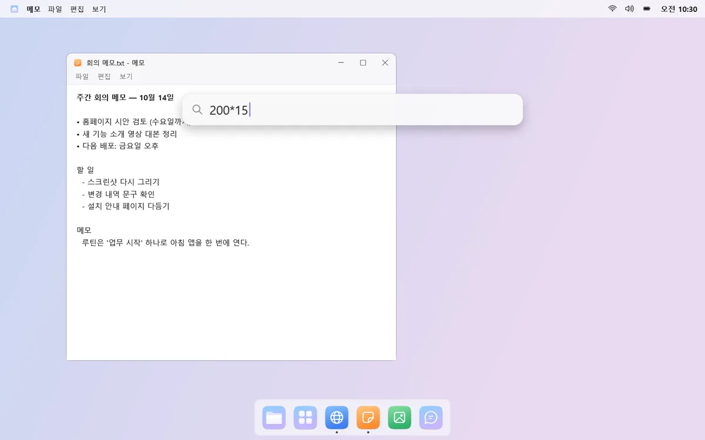
알아 두세요
- 카카오톡처럼 윈도우 알림 대신 자체 팝업을 띄우는 앱은 배너로 나오지 않아요. 독 아이콘의 빨간 점은 보여요.
- 알림 소리를 바꾸면 처음 한 번은 다시 로그인해야 적용돼요.
- 개인 네이버 캘린더는 iCal 구독 주소를 제공하지 않아 연결할 수 없어요.
- 외장 모니터 밝기는 밝기 조절(DDC/CI)을 지원하는 모니터에서만 바꿀 수 있어요.